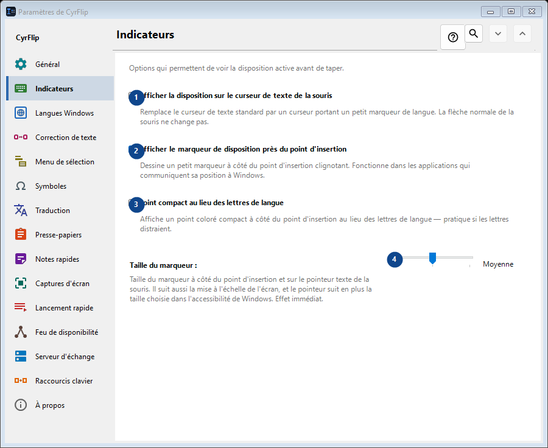
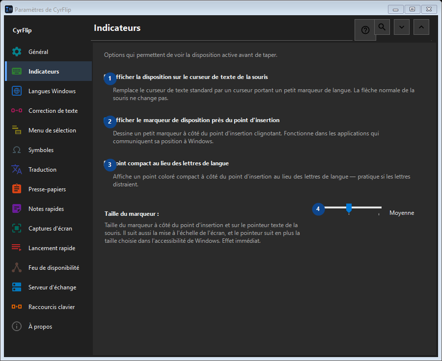

Indicateurs
À quoi cela sert
Options qui permettent de voir la disposition active avant de taper.


Ordre des actions
Les réglages s’appliquent immédiatement. Aucun ordre n’est imposé ; utilisez les groupes ci-dessous.
Éléments
1. Afficher la disposition sur le curseur de texte de la souris
Remplace le curseur de texte standard par un curseur portant un petit marqueur de langue. La flèche normale de la souris ne change pas.
Vos raccourcis2. Afficher le marqueur de disposition près du point d'insertion
Dessine un petit marqueur à côté du point d'insertion clignotant. Fonctionne dans les applications qui communiquent sa position à Windows.
Vos raccourcis3. Point compact au lieu des lettres de langue
Affiche un point coloré compact à côté du point d'insertion au lieu des lettres de langue — pratique si les lettres distraient.
Vos raccourcis4. Taille du marqueur
Choisissez ou saisissez la valeur indiquée par le libellé voisin. Vérifiez-la avant de continuer.
Vos raccourcis